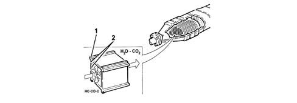
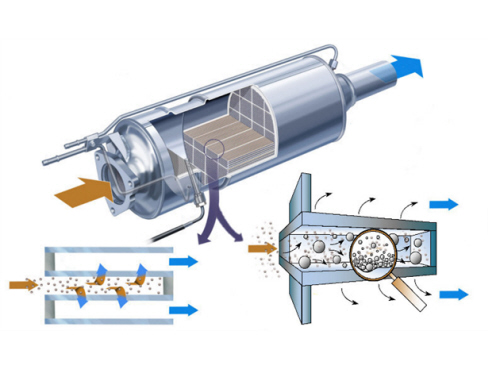
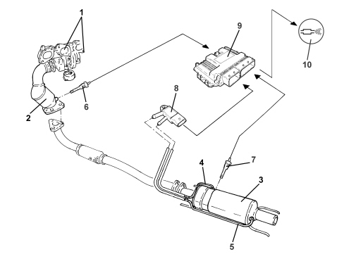

DESCRIPTION OF COMPONENTS
CATALYTIC CONVERTER
Specifications
The catalytic converter is a post-treatment device for oxidizing the CO, HC and particulate, converting them into carbon dioxide (CO2) and water vapour (H20).
The catalytic converter consists of a ceramic, honeycomb structure (1) with cells impregnated with platinum (2) which catalyzes the oxidation reactions.

Operation
The exhaust gases passing through the cells heat the catalyzer, triggering the conversion of pollutants into inert compounds.
The oxidising chemical reaction of the CO, HC and particulate is effective at temperatures of between 200 and 350°C.
Actually, above 350°C the sulphur contained in the diesel fuel starts to oxidise, producing sulphur dioxide and sulphur trioxide.
DPF SYSTEM (Diesel Particulate Filter)
This is a mechanical filter that "traps" the carbon particles (particulate) and the engine oil ashes in the exhaust gases in diesel engines.
The action of the DPF makes it possible to keep carbon particle levels down by around 90% in line with Euro 4 and 5 regulations.

The operation of the DPF system is managed by the engine injection control unit by means of suitable strategies. In addition to the actual filter the DPF system comprises an exhaust gas temperature sensor and a differential pressure sensor.
The differential pressure sensor measures the pressure of the exhaust gases upstream and downstream of the filter, by means of a special pipe(s), signalling the gradual accumulation of particulate to the control unit. The particulate accumulation process and the relative increase in the pressure of the exhaust gases inside the filter depends on the engine load, the weight of the vehicle and the engine capacity and power. Therefore the particulate needs to be removed on a regular basis, regenerating the filter following a procedure that makes use of multiple injections to increase the temperature of the exhaust gases (about 600°C) and burn the particulate. The regeneration procedure is controlled by the injection control unit which acts: on the metering of the fuel (up to five injections in the same engine cycle per cylinder) and on the control of the air (E.G.R. and supercharging pressure).
The regeneration phase takes place over a few minutes and does not affect the continuity of the torque supplied by the engine in terms of normal operation.
When the driving profile does not permit automatic regeneration, after several failed attempts, the injection control unit activates a "particle filter blocked" warning light in the control panel.
It is therefore advisable to keep the vehicle running until the "particle filter blocked" warning light goes out.
If the "particle filter blocked" warning light remains on, it is vital to carry out the forced regeneration using the diagnostic equipment (Examiner) as described in
Op. 0520G12 PARTICULATE FILTER (D.P.F.) - REGENERATION EXAMINER
If the condition of the filter deteriorates (the accumulation threshold of 250% is exceeded) as well as the "particle filter blocked" warning light, the EOBD warning light will also come on and it is therefore vital to carry out the forced regeneration using the diagnostic equipment (Examiner) as described in 0520G12.
It is possible during the regeneration stage that some of the particulate will pollute the engine oil and therefore it must be changed in advance of the programmed interval. This is signalled by the "minimum engine oil pressure" warning light flashing. This signalling is controlled by the injection control unit depending on the:
- number of regenerations,
- kilometres travelled (mileage),
- number of engine starting cycles,
- number of cold starts,
- average value of engine oil temperature,
- etc.

|
After changing the engine oil earlier than planned, connect the Examiner to reset the Service function. |

1. Turbocharger-exhaust manifold assembly
2. Catalytic converter
3. Filter
4. Exhaust gas pressure intake upstream of the filter
5. Exhaust gas pressure intake downstream of the filter (where fitted)
6. Exhaust gas temperature sensor downstream of the catalyzer
7. Exhaust gas temperature sensor downstream of the filter
8. Differential pressure sensor
9. Injection control unit
10. Particulate filter blocked warning light